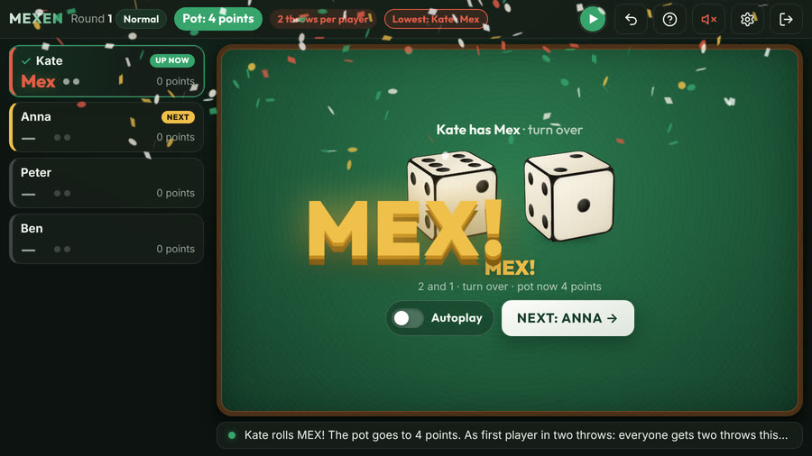
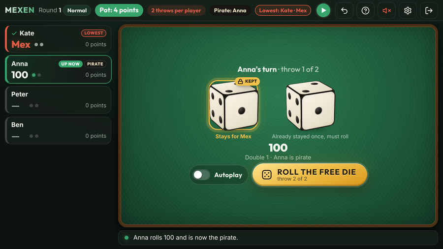
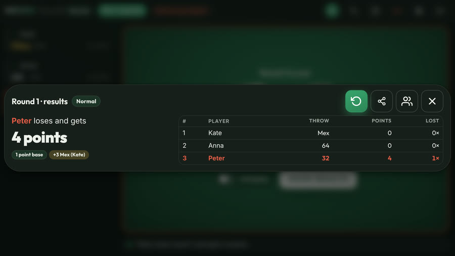

How to play Mexen
Mexen (also called Mex) is a fast Dutch dice game for two or more players. It is a close relative of the dice game known in English as Mexico: two dice, open throws, and the lowest score of the round loses. Unlike Mia, nobody bluffs. Tables have their own house rules; below are the rules as the Mexen app plays them.
- Players
- 2 or more
- You need
- 2 dice
- A round
- a few minutes
- Playing for sips
- 18+ only

Reading a throw
The higher die is the tens, the lower die the units: a 6 and a 4 make 64, a 5 and a 3 make 53. From high to low:
- Mex (2 and 1) is the highest throw.
- Doubles count as hundreds: double 6 is 600, double 5 is 500, down to double 1 = 100.
- Ordinary throws: 65, 64, 63 and so on, down to 41.
- 32 is the lowest throw.
- 31 is not a score: you hand out a sip and roll again.
Your turn
- You get three throws and the last one counts. You can't stop early; only a Mex or a 32 ends your turn sooner.
- After a throw you may keep one die, but for one throw at most; after that it has to roll again. Keeping a 1 gives you a shot at Mex. You can keep a 2 as well, but then you risk a 32.
- The dice stay on the table during a round: the next player may also keep a freshly rolled 1. A new round starts with an empty table.
- If the first player of the round rolls Mex in one or two throws, everyone after them gets only that many throws.
Mex, 32 and 31
- Mex (2 and 1): your turn ends at once and 3 sips go into the pot.
- 32: the lowest throw. Your turn ends at once and this is your final score.
- 31: you hand out a sip to anyone you like. The throw doesn't count and you roll again, as often as it happens.
The pirate
Roll double 1 and you become the pirate. Every double 2 to 6 rolled after that, by anyone, is a sip for the pirate. If the pirate rolls double 1 again, they become pirate ×2: two sips per double (and so on). If someone else rolls double 1, they take over. The pirate stays on from round to round.

End of the round: the pot
- When everyone has played, the lowest score loses and takes the pot: 1 sip, plus 3 for every Mex in the round.
- If two or more players tie for the lowest, they each roll one die: the highest roll loses. Tied again? Only they roll once more.
- The loser starts the next round.
Playing for points instead of sips
Rather play without drinks? Play for points: wherever it says "sip", read "point". The loser of a round adds the pot to their points; whoever has the most points at the end is last. In the app you choose this at the first start, and later in the settings.

Variant: extreme
- Everyone always throws exactly three times, even after a Mex; only the third throw counts.
- No keeping dice: you always roll both.
- The pot starts at 1. Mex and 65 double the pot, and every double adds its pips (double 3 = +3, double 1 = +1). Everything in the order it is rolled.
- 31 doesn't count: just roll again, no sip to hand out. The pirate works as in the normal game.
- The lowest takes the whole pot; on a tie, those players roll one die each, as above.
Let the app keep score
The free Mexen app is your scorekeeper: 3D dice, it knows all the rules above, keeps track of the pot and the pirate and tells you who loses. In six languages, no account, works offline.
Play responsibly
Playing for sips? Only if you are 18 or older; drink in moderation and never drive afterwards. Or simply play for points.